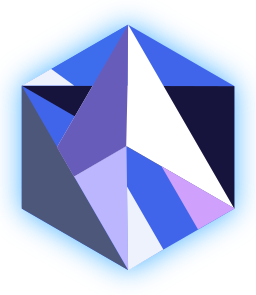

The Amethyst Engine
Note: This project is a work in progress and is very incomplete. Pardon the dust!
Howdy! This book will teach you everything you need to know about building video games and interactive simulations with the Amethyst game engine. This engine is written entirely in Rust, a safe and fast systems programming language, and sports a clean and modern design. More correctly, though, Amethyst is actually a suite of separate libraries and tools that collectively make up a game engine.
Amethyst is free and open source software, distributed under a dual license of MIT and Apache. This means that the engine is given to you at no cost and its source code is completely yours to tinker with. The code is available on GitHub. Contributions and feature requests are welcome!
This book is split into three sections (more coming). This page is the first. The others are:
- Getting Started – Prepare your computer for Amethyst development.
- A Simple Application – Build a basic pong game in Rust.
- Glossary - Defines special terms used throughout the book.
Read the crate-level API documentation for more details.
Why are you building this?
I've worked with a few game engines over the years, namely Unity and the Unreal Development Kit, and both are pretty solid solutions if you want to build a quality game. But each have their own pros and cons that you have to weigh before using them, especially in regards to performance and scalability.
One engine I've always admired as a programmer but never had a chance to play with is the Bitsquid Engine (now called Autodesk Stingray). It's fast, forward-thinking, highly parallel, and data-driven. It seems like a wonderful platform for rapid prototyping. I've wanted to play around with a Bitsquid-like engine for a while, but I couldn't find any open-source equivalents out there. Most of those I did find stuck to outdated design patterns and lacked the multi-core scalability I was looking for. So I set out to write my own.
In short, I am writing Amethyst to scratch three of my own itches:
- Teach myself Rust, game development, and computer graphics in their purest form, rather than through the lens of a particular game engine.
- Write a modular, parallel, data-oriented, and data-driven engine suited for rapid prototyping that demands (a little) less boilerplate from the user.
- Build a toolset that splits up the traditional "mega-editor" into several small but well-integrated tools, adhering to the Unix philosophy.
Contributing
The Markdown source files from which this book is generated can be found on GitHub. Pull requests are welcome!